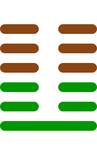

第二十四卦
复卦

卦辞
亨。出入无疾，朋来无咎。反复其道，七日来复，利有攸往。
复卦象征回复、恢复与重生。卦辞意为：亨通。出入没有疾病，朋友来没有灾害。反复其道，七日来复，利于有所往。复卦教导我们要善于回归正道，恢复生机。
彖传
复亨，刚反，动而以顺行，是以出入无疾，朋来无咎。反复其道，七日来复，天行也。利有攸往，刚长也。复其见天地之心乎。
彖传说：复亨通，刚返，动而以顺行，所以出入无疾病，朋友来无灾害。反复其道，七日来复，是天道的运行。利于有所往，是因为刚在增长。复卦大概是体现了天地的心吧。
象传
雷在地中，复。先王以至日闭关，商旅不行，后不省方。
象传说：雷在地中，就是复卦。先王应当在冬至日关闭关隘，商旅不通行，君王不省察四方。雷藏于地中象征内敛修养，要适时休养生息。
爻辞
初九：不远复，无祗悔，元吉
不远就回复，没有大的悔恨，大吉祥。
初九爻位于最下方，及时回复。走了不远就回归正道，没有大的悔恨，是大吉祥，表示及时改正错误。
六二：休复，吉
美好地回复，吉祥。
六二爻得中得正，善美回复。美好地回归正道，是吉祥的，表示优雅地回归。
六三：频复，厉，无咎
频繁回复，危险，没有灾害。
六三爻位置不当，反复不定。频繁地回归正道，虽然有危险，但没有灾害，表示在困难中坚持。
六四：中行独复
中行独自回复。
六四爻接近君位，独立回复。在行进中独自回归正道，表示坚定的信念和独立精神。
六五：敦复，无悔
敦厚地回复，没有悔恨。
六五爻居中尊位，诚恳回复。敦厚地回归正道，没有悔恨，表示真诚的态度。
上六：迷复，凶，有灾眚。用行师，终有大败，以其国君凶，至于十年不克征
迷失回复，凶险，有灾害。用于行军，最终大败，其国君凶险，至于十年不能征伐。
上六爻位于极点，迷失方向。迷失回归正道的时机，凶险，会有灾害。用于军事会导致大败，国君凶险，长期不能恢复。